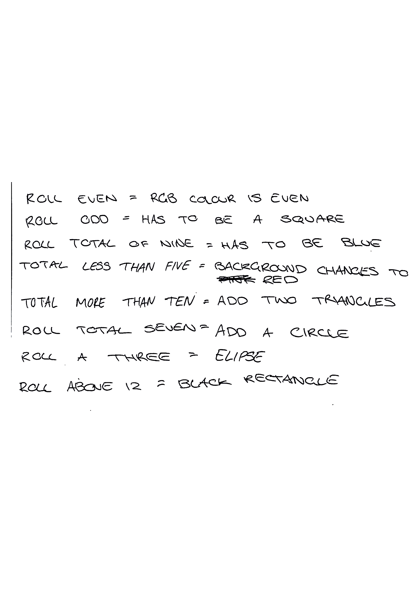

Week 4 - Played a game of chance with paper, dice, and pens.
Also created a few sketches in P5.

Show me P5 sketch!!!!!!!
Week 5 - Created more P5 sketches. Added images and webcam.
Experimented with stacking webcam filters.
Week 6 - We organised our belonings. My items were organised into will use the most to least.
Also made a pie chart in P5.
Week 7 - Built a circuit where a light turns on when a buttons pressed. Added a second light.
Also learnt basic Arduino and made the ultrasonic circuit.
Week 8 - Built another circuit. This one was called Fish Playground.
Week 9 - The circuit we built this week used a sensor to turn on a light.